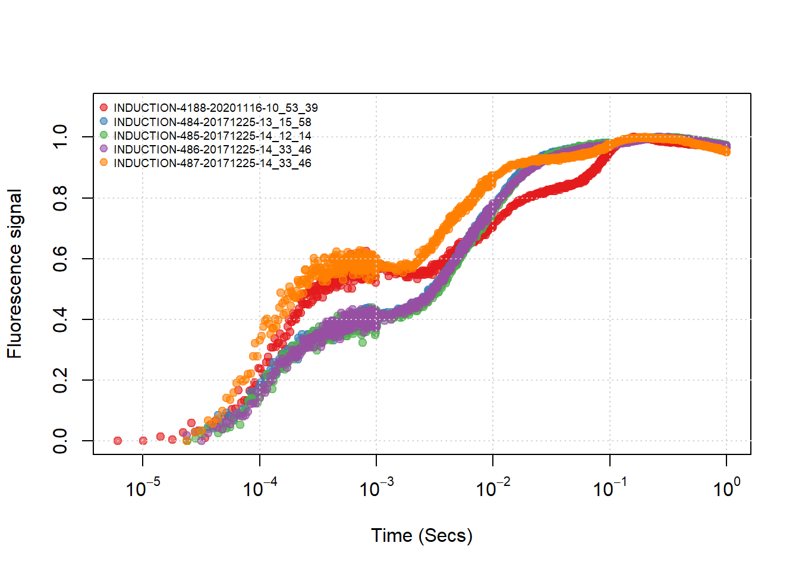
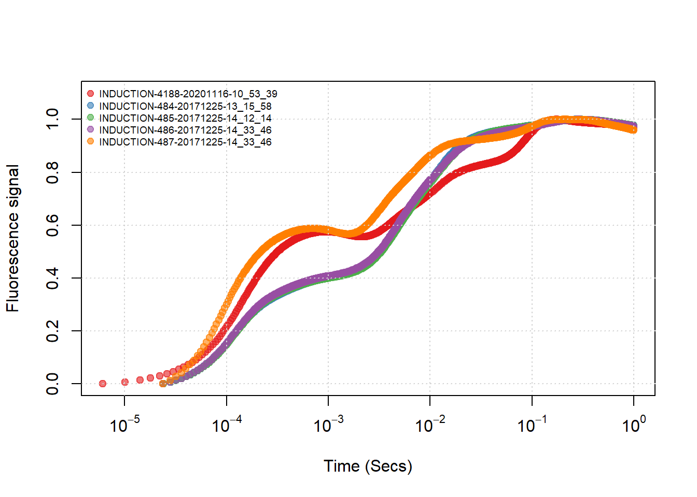
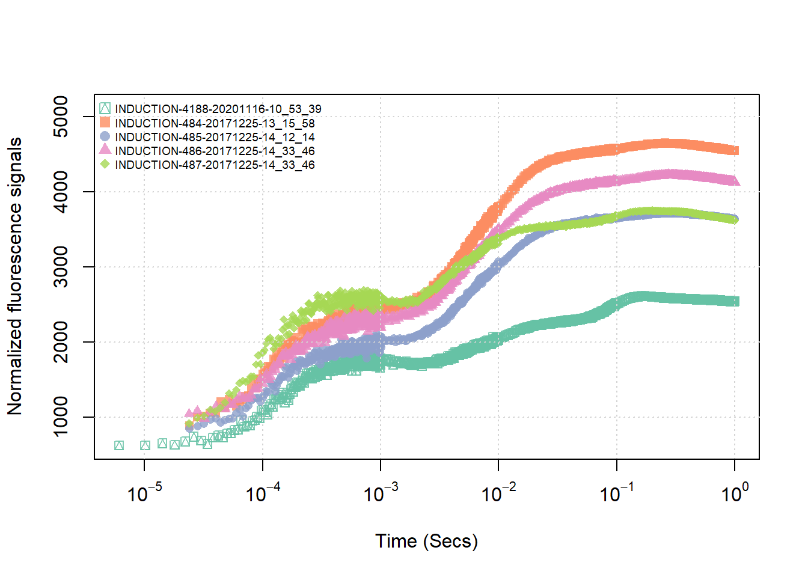
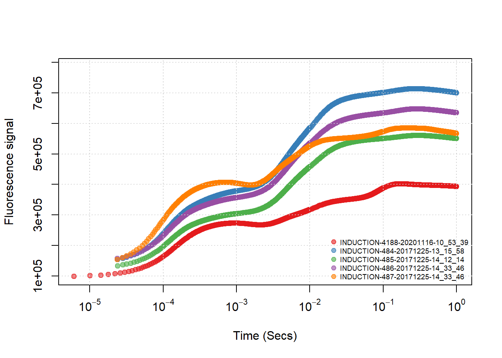

Code
install_github("zhujiedong/jiptest")
# 或
install_git('https://gitee.com/zhu_jie_dong/jiptest')LI-6800 能够直接提供基本的叶绿素荧光参数，其他参数均可通过这些基本的参数进行计算，计算也较简单，在此不赘述，需要注意的是快相荧光部分的数据，因为分析 ojip 数据的模型有很多，多数情况下都需要大量的计算，在此我们先将其中较为简单的 jip test 数据分析进行介绍。
分析依赖于我写的 jiptest 软件包，去年冬天（2020.11）我修改了一次，其中我希望大改的是求曲线下部面积的部分，因为曲线形状不规则，需要用到积分，我用的现成的软件包，而且印象里求面积没有使用标准化后的数据来进行计算，所以不太合适，这个我争取近期找时间来解决一下，这里先立一个 flag，安装可以按照下面的方式：
install_github("zhujiedong/jiptest")
# 或
install_git('https://gitee.com/zhu_jie_dong/jiptest')read_files 及 read_dcfiles 函数read_files 用于批量读取所有调制光测量数据，方便用于其他的数据分析。函数要求所有数据必须是 xlsx 格式，并且所有测量数据都保存在同一文件夹内。，如有其他文件或测量数据则会报错。 read_dcfiles 用于批量读取所有连续光测量数据，其他选项与 read_dcfiles 相同。例如在了 data文件夹下的 ojip 文件夹内，有五个数据文件。
函数仅有一个参数，即保存数据文件夹的路径，使用如下：
读取调制光测量数据：
library(jiptest)
jip_data<- read_files("data/ojip")读取连续光数据：
jip_dcdata <- read_dcfiles("data/ojip")调制光的信号前 10 行数据：
| SECS | FLUOR | NORM_FLUOR | SOURCE |
|---|---|---|---|
| 6.10e-06 | 621 | 0.0005027 | INDUCTION-4188-20201116-10_53_39 |
| 1.01e-05 | 620 | 0.0000000 | INDUCTION-4188-20201116-10_53_39 |
| 1.42e-05 | 649 | 0.0145781 | INDUCTION-4188-20201116-10_53_39 |
| 1.80e-05 | 629 | 0.0045242 | INDUCTION-4188-20201116-10_53_39 |
| 2.21e-05 | 674 | 0.0271455 | INDUCTION-4188-20201116-10_53_39 |
| 2.61e-05 | 736 | 0.0583126 | INDUCTION-4188-20201116-10_53_39 |
连续光的信号前 10 行数据：
| SECS | FLUOR | NORM_FLUOR | SOURCE |
|---|---|---|---|
| 6.10e-06 | 98161 | 0.0000000 | INDUCTION-4188-20201116-10_53_39 |
| 1.01e-05 | 100331 | 0.0071347 | INDUCTION-4188-20201116-10_53_39 |
| 1.42e-05 | 102577 | 0.0145193 | INDUCTION-4188-20201116-10_53_39 |
| 1.80e-05 | 104849 | 0.0219894 | INDUCTION-4188-20201116-10_53_39 |
| 2.21e-05 | 107214 | 0.0297652 | INDUCTION-4188-20201116-10_53_39 |
| 2.61e-05 | 109624 | 0.0376890 | INDUCTION-4188-20201116-10_53_39 |
jip_test 及 jip_dctest 函数jiptest 是 jiptest 的核心函数，用于所有数据的 jiptest 分析，函数仅包一个参数，测量数据的保存文件夹路径。 jip_dctest 与 jip_test 相似，用于连续光测量数据的分析。
actest <- jip_test("data/ojip")dctest <- jip_dctest("data/ojip")调制光信号的计算参数：
连续光信号计算参数：
可以看出，对于标准化之后的参数，二者基本一致，原始信号则无法一致，因为连续光信号强度更高（所以数据的比较要在相同的测量光内进行）。 。若需要将数据导出，可以使用相关命令：
write.csv(actest, "d:/data/jip_resluts.csv")
write.csv(dctest, "d:/data/dcjip_resluts.csv")如果仅仅是简单查看结果，那么我们直接用默认参数就好，作图的数据是之前导入的数据文件：
默认使用标准化的荧光信号（也就是除以最大值，标准化到 0~1 之间，LI-6800 在 1.4 之后的版本也提供了仪器上查看的界面）。
plot(jip_data)
plot(jip_dcdata)
默认图形，仅仅查看结果是可以的，当然有些情况下需要进行调整才方便做展示用。
这个是这次改动的重点之一，例如都使用原始信号分别做上面两幅图：
这里使用原始荧光信号，然后更改图例颜色等，主要是 add_leg = FALSE 不增加默认的图例，以及 normalized = FALSE 不使用信号标准化。其他请参考帮助 ?plot.jip。 我简单写了一下帮助文档，大家应该基本能看明白，我暂时一直没时间详细了写。
cls <- palette.colors(n = 5, "set 2", alpha = 0.8)
plot(
jip_data,
ylab = 'Normalized fluorescence signals',
add_leg = FALSE,
def_pch = 14:18,
col = cls,
main = "Demodulated signals",
normalized = FALSE
)
legend(
"topleft",
unique(jip_data$SOURCE),
col = cls,
pch = 14:18,
cex = 0.6,
pt.cex = 1.2,
bty = "n"
)
连续光图形，例如修改图例的位置以及不显示标准化的数据。
plot(jip_dcdata, legend_pos = "bottomright", normalized = FALSE)
关于标准化和非标准化图形差异大的问题，这个比较简单，原始信号比较低的那条线，是不同物种的不同叶片，所以不具备比较价值，我只是程序测试。
建议在开始分析数据前，使用作图查看数据质量，若使用调制光数据测量的荧光信号太弱，数据点太散，则可以使用连续光测量信号进行分析，对于归一化的荧光参数，二者几乎无差别。最好的方式当然是在测量时注意荧光信号强度，若基础荧光信号太弱，尝试增加测量叶片的面积，增强荧光信号强度，增大信噪比。